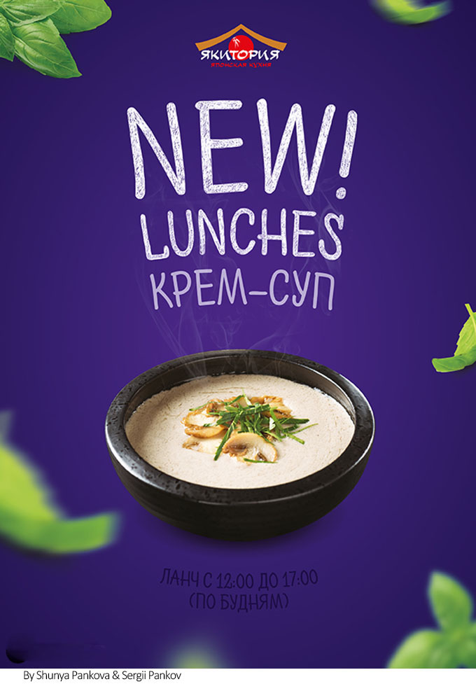

摘要：色彩的魅力是无限的，它可以让很平淡无味的元素，瞬间就能变得漂亮、美丽起来。
色彩的魅力是无限的，它可以让很平淡无味的元素，瞬间就能变得漂亮、美丽起来。好的色彩搭配能够在瞬间吸引观者的目光，给观者美感和愉悦感。色彩对人的视觉效果非常明显，设计作品的成功与否，在某种程度上取决于设计师对色彩的运用和搭配。所以，当代设计师不仅要掌握基本的设计技巧，还需要掌握设计的风格，配色等设计艺术。
认识色彩
为了能更好地在设计中运用色彩，先来了解一下色彩的概念。自然界中有很多种色彩，比如树木是绿色的，大海是蓝色的，草霉是红色的……但是最基本的有三种，分别是红、绿、蓝，我们称这三种色彩为“光学三原色”。其它所有的色彩都可以由这三种色彩调和而成。
现实生活中的色彩，可分为无彩色和有彩色两大类。前者如黑、白。灰，后者如红、绿、蓝等七彩。有彩色就是具备光谱上的某种或某些色相，统称为彩调。与此相反，无彩色就没有彩调。
色相（Hue），简写H，表示色的特质，是区别色彩的必要名称，例如红、橙、黄、绿、青、蓝、紫等。色相和色彩的强弱及明暗没有关系，只是纯粹表示色彩相貌的差异。
明度（Value），简写V，表示色彩的强度，也即是色光的明暗度。比如一些购物，儿童类设计。用的是一些鲜亮的颜色，让人感觉绚丽多姿，生气勃勃。
纯度（Chroma）：简写C，表示色的纯度，亦即是色的饱和度。具体来说，是表明一种颜色中是否含有白或黑的成份。
邻近色：色环中相邻的三种颜色。相近色的搭配给人的视觉效果很舒适，很自然。
互补色：色环中相对的两种色彩，如红和绿。对互补色，调整一下补色的亮度，有时候是一种很好的搭配。
暖色：红、橙、黄色常使人联想起东方旭日和燃烧的火焰，因此有温暖的感觉。
冷色：蓝色常使人联想起高空的蓝天、阴影处的冰雪，因此有寒冷的感觉。冷色一般应用于一些高科技，游戏类设计，主要表达严肃，稳重等效果，绿色，蓝色，蓝紫色等等都属于冷色系列。
红色
红色是热烈、冲动、强有力的色彩。除了具有较佳的视觉效果之外，更被用来传达有活力，积极，热诚，温暖，前进等涵义的企业形象与精神。
在颜色的应用中，单纯以红色为主色调的设计相对较少，多用作辅助色、点睛色，以达到陪衬、醒目的效果。红色与少量黄色相搭配，会使其热力强盛，趋于躁动、不安，极富动感和张扬的个性。红色与黑色的搭配在商业设计中被誉为商业成功色，在设计中也比较常见。红黑搭配常被用于较前卫时尚、个性的娱乐休闲设计中。
黄色
黄色具有快乐，希望，智慧和轻快的个性，它的明度最高。黄色是有彩色中最明亮的色彩，同时又容易引起味觉上的条件反射，给人以甜美和香酥感，在很多设计作品中黄色都被用来表现华丽的氛围。黄色在配色中使用最为广泛的颜色之一。
橙色
橙色是欢快活泼的光辉色彩，是暖色系中最温暖的色，是一种富足、快乐而幸福的颜色。橙色稍稍混入黑色或白色，会变成一种稳重、含蓄又明快的暖色，但混入较多的黑色，就成为一种烧焦的色；橙色中加入较多的白色会带来一种甜腻的感觉。橙色与浅绿色和浅蓝色相配，可以构成最响亮、最欢乐的色彩。橙色与淡黄色相配有一种很舒服的过渡感。橙色一般不能与紫色或深蓝色相配，这将给人一种不干净、晦涩的感觉。
蓝色
蓝色最具凉爽，清新，专业的色彩。蓝色能够营造出和平淡雅洁净及可靠等氛围。在商业设计中强调科技、商务的企业形象时，大多选用蓝色当标准色。蓝色是冷色系中最典型的代表，是设计中运用得最多的颜色。它主要用于营造安稳、可靠及略带有神秘感的氛围，一般用于企业宣传类设计中，往往给人以专业、科技的感觉。
绿色
介于冷暖两中色彩的中间，显得和睦，宁静，健康，安全的感觉。在商业设计中，绿色所传递的是清爽、理想、希望和生长的意象，较符合服务业、教育行业、农业类设计的要求。它本身具有特定的与自然、健康相关的感受，所以也经常被用于与自然、健康相关的站点。绿色具有黄色和蓝色两种成分，绿色的性格最为平和、安稳，是一种柔顺、恬静、满足及优美的色彩。接下来我们看看色彩有哪些常用搭配方法？
不同明度配色
首先选定一种色彩，然后调整其透明度和饱和度，将色彩变淡或加深，而产生新的色彩，这样的画面看起来色彩统一，具有层次感。然后调整透明度或者饱和度，将背景、文字等元素都控制在此色彩中，只是在明度上有所变化，那么色彩就会非常统一，而且还有层次感。如：浅蓝色的背景，深蓝色的文字，蓝灰色的边框等等。
对比色配色
用色相、明度或艳度的反差进行搭配，有鲜明的强弱。一般来说，色彩的三原色（红、绿、蓝）最能体现色彩间的差异。色彩的强烈对比具有视觉诱惑力，能够起到几种实现的作用。对比色可以突出重点，产生强烈的视觉效果。通过合理使用对比色，能够使作品特色鲜明、重点突出。在设计时，通常以一种颜色为主色调，其对比色作为点缀，以起到画龙点睛的作用。如红配绿，黄配紫，蓝配橙。
近似配色
选择相邻或相近的色相进行搭配。邻近色是指在色环上相邻的颜色，如绿色和蓝色、红色和黄色即互为邻近色。采用邻近色搭配可以避免色彩杂乱，易于达到页面和谐统一的效果。这种配色因为含有三原色中某一共同的颜色，所以很协调。因为色相接近，所以也比较稳定，如果是单一色相的浓淡搭配则称为同色系配色。出彩搭配：紫配红，紫配橙，绿配橙。
单重点配色
让两种颜色形成面积的大反差。“万绿丛中一点红”就是一种单重点配色。其实，单重点配色也是一种对比，相当于一种颜色做底色，另一种颜色做图形。
暖色色彩搭配
暖色色彩搭配是指使用红色、橙色、黄色、集合色等色彩的搭配。这种色调的运用可为设计作品营造出稳性、和谐和热情的氛围。
冷色色彩搭配
冷色色彩搭配是指使用绿色、蓝色及紫色等色彩的搭配，这种色彩搭配可为画面营造出宁静、清凉和高雅的氛围。冷色点色彩与白色搭配一般会获得较好的视觉效果。
一幅设计作品最好有一种主题色，主调色彩一般可用公司的标准色，这符合公司的形象战略，可以提升公司形象。并利用这个主色调贯穿所有的画面，而根据不同的单元，可再以辅色搭配做出区分。在搭配色彩之前必须要先弄明白设计的主题和它的服务对象，以及你通过色彩希望达到的目的。例如要强调的是自然、环保，可以以蓝、绿色系为主，强调的是现代、科技，可以用蓝、黑色。
一般来说，背景色应该柔和一些、素一些、淡一些，再配上深色的文字，使人看起来自然、舒畅。而为了追求醒目的视觉效果，可以为标题使用较深的颜色。必须要考虑到背景颜色的用色，与前景文字的搭配等问题。如果设计作品侧重的是文字，所以背景可以选择纯度或者明度较低的色彩，文字用较为突出的亮色。让人一目了然。文字和背景的颜色搭配要合理、醒目、易读。 完美的色彩可以使一幅设计作品充满活力，认识设计中的色彩，让设计作品更加丰富多彩。


济南海右博纳品牌营销咨询有限公司
Copyright 2001-2019 All Rights Reserved Sivibrand.
王伟品牌顾问微信